Dungeoneering - Runecrafting Tables
Introduction
To craft runes in Daemonheim, you must be raiding a dungeon on the following complexity level:
Complexity level 3+ - Runecrafting
To power a staff in Daemonheim, you must be raiding a dungeon on the following complexity level:
Complexity level 3+ - Runecrafting
Click here to read more about Runecrafting in RuneScape.
Crafting Runes
To craft a rune in Daemonheim, you will have to have rune essence. This can be gathered from the drops of monsters about Daemonheim. With rune essence in your possession, you can make your way to an altar - one of which is likely to be in the starting room of your dungeon - and convert the essence into your choice of rune.
Rune |
Level Required |
Experience gained (per 10 rune essence) |
![[image]](../../img/main/kbase/items/runes/arune.gif) Air |
1 |
1.0 |
| 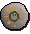 Mind |
2 |
1.1 |
![[image]](../../img/main/kbase/items/runes/wrune.gif) Water |
5 |
1.2 |
![[image]](../../img/main/kbase/items/runes/erune.gif) Earth |
9 |
1.3 |
![[image]](../../img/main/kbase/items/runes/frune.gif) Fire |
14 |
1.4 |
![[image]](../../img/main/kbase/items/runes/brune.gif) Body |
20 |
1.5 |
| 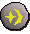 Cosmic |
27 |
1.6 |
![[image]](../../img/main/kbase/items/runes/chrune.gif) Chaos |
35 |
1.7 |
![[image]](../../img/main/kbase/items/runes/astral_rune.gif) Astral |
40 |
1.74 |
![[image]](../../img/main/kbase/items/runes/nrune.gif) Nature |
44 |
1.8 |
| 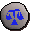 Law |
54 |
1.9 |
![[image]](../../img/main/kbase/items/runes/death_rune.gif) Death |
65 |
2 |
| 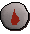 Blood |
77 |
2.1 |
Powering Staves
Powering a staff can be achieved at any Runecrafting altar in Daemonheim. With a staff on your person, use it on the altar and make your selection from the staff options. A powered staff of a particular tier can only be made from a wood that is of the same tier or higher.
(m) = Members Only
Empowered staff |
Level Required |
Wood Required |
Experience gained |
| 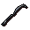 Water staff |
10 |
Any | 5.5 |
| 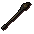 Earth staff |
20 |
Tier 2 or higher | 12 |
| 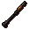 Fire staff |
30 |
Tier 3 or higher | 20.5 |
| 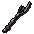 Air staff |
40 |
Tier 4 or higher | 29 |
| 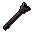 Catalytic staff (m) |
50 |
Tier 5 or higher | 39.5 |
![[image]](../../img/main/kbase/skills/dungeoneering/items/weapons_ammo/empowered_water_staff.gif) Empowered water staff (m) |
60 |
Tier 6 or higher | 51 |
| 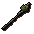 Empowered earth staff (m) |
70 |
Tier 7 or higher | 63.5 |
![[image]](../../img/main/kbase/skills/dungeoneering/items/weapons_ammo/empowered_fire_staff.gif) Empowered fire staff (m) |
80 |
Tier 8 or higher | 76 |
![[image]](../../img/main/kbase/skills/dungeoneering/items/weapons_ammo/empowered_air_staff.gif) Empowered air staff (m) |
90 |
Tier 9 or higher | 90.5 |
| 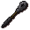 Empowered catalytic staff (m) |
99 |
Tier 10 | 106 |

More articles in
Dungeoneering
|
|
|
Further Help
Need more help? Come chat with us!
|
|